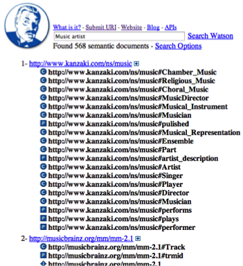
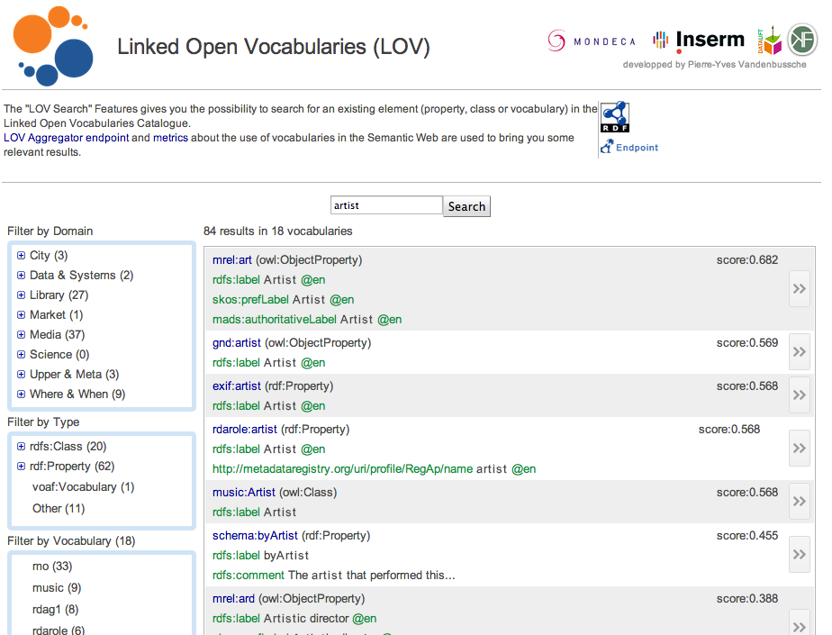

In the examples we have seen so far, search is primarily about finding content. Semantics assist in the search for content by, for example, disambiguating search terms. However, some search engines are directed at finding semantic data. These tools can be used to search for ontologies, vocabularies or particular RDF documents. These tools are therefore aimed more at data specialists rather than the end user.

Figure 51. Watson semantic web search engine [28].
Vocabularies can be searched using the LOV portal (this was mentioned as a source of reusable vocabularies in section 3.4 of chapter 3). A keyword search can be used to retrieve a set of vocabularies that can then be filtered using a number of provided facets. The results returned also have a confidence score giving an explicit indication of relevance of that vocabulary to the query. Similar to Watson, the snippets or previews also provide an indication of how the search terms match the vocabulary.

Figure 52: Using the LOV portal to search for vocabularies.